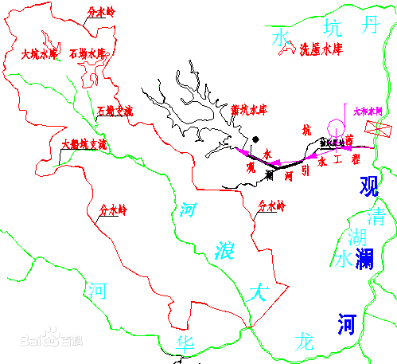

观澜河
观澜河，发源于深圳市宝安区民治街道境内的大脑壳山，向北流经宝安区的游松、清湖和观澜后进入东莞市，北流至塘厦镇右纳雁田水后始称“石马河”，继续北流经樟木头镇和桥头镇，于桥头镇建塘东南1千米处汇入东江。
| 名称 | 观澜河 | 主要支流 | 大浪河、民治河、樟坑径河、牛湖水、白花河 |
| 所属水系 | 东江水系一级支流石马河的上游段 | 河长 | 88 公里 |
| 地理位置 | 广东省 | 河流面积 | 1249 平方公里 |
| 流经地区 | 深圳、东莞 | 平均流量 | 1.92 亿立方米 |
| 发源地 | 羊台山 | 落差 | 70 米 |


简介
观澜河河长88千米，总落差70米，河道比降0.51‰，流域面积1249平方千米。1964年以前，石马河下游于东莞桥头镇陈屋边这向西，在今企石镇汇入东江。1964年续建潼湖整治工程，堵塞企石河，从企石上移河口14千米，经新开河入东江。同时建设石马河供水工程，取水东江，拦河筑坝，建一系列大型泵站，逐级提升水位，是石马河由北向南倒流入深圳水库。1965年投入使用，向深圳和香港供水。20世纪80年代以来，随着石马河流域经济的发展，生活和工业废水大量排入，使水质恶化。粤港两地政府实施供水工程第四期改造，采用供水管道，使供水渠与河道分离，2003年6月管道全线通水，石马河恢复天然流向。
主要支流
大浪河
大浪河位于深圳市中北部宝安区大浪街道，龙华河的一级支流，观澜河的二级支流河，发源于简坑岭，由北向南由北经新围、大浪村、老围村，在狮头岭村委附近汇入龙华河后注入到观澜河。
大浪河流域主要为低山丘陵地带及盆地区，地势较为平缓，流域内植被覆盖率较低，同时近年来河道两岸土地开发利用量大，在土地开发过程中水土保持措施做的不完善，水土流失严重，局部河段淤积深达2～3.0 m，严重影响河道的过流能力。
大浪河河道全长9.10km，河道天然平均坡降5.30‰，河口总的控制集雨面积11.75km2。上游现有大坑、石凹水库，两座水库控制集雨面积为1.37 km2
民治河
民治河（游松河）位于深圳市中北部宝安区龙华境内，观澜河的上游支流，发源地为大脑壳山。河流上游有民乐、雅宝、民治三座水库以及支流牛咀水有牛咀水库，民乐、雅宝水库在民治水库集雨面积范围内，其泄洪均泄入民治水库，现状民治河起点接民治水库溢洪道，然后流向基本从南向北，穿过民和路、民康路、平南铁路，然后有支流牛咀水、樟坑水汇入，再穿过布龙公路、工业东路，终点河口位于下游松村北侧，与坂田河合流后汇入观澜河。
经查算，民治河流域多年平均径流深为960mm，年径流变差系数Cv=0.38，Cs=2Cv。
流域内民乐、雅宝、民治、牛咀四座水库的控制集水面积为6.64km2
樟坑径河
樟坑径河流域位于深圳市北部，是观澜河的一级支流。其发源于雷公山顶，樟坑径河现在起点位于宝安区观澜街道樟坑径水库溢洪道，在赤花岭有其支流横坑水汇入。从上游开始依次流经樟坑径居民小组、新田居民小组、松元居民小组、桂花居民小组，然后汇入观澜河。
樟坑径河无实测水文资料，经查算，樟坑径河流域多年平均径流深为960mm，年径流变差系数Cv=0.38，Cs=2Cv。
樟坑径流域内有两座调蓄水库，分别为樟坑径水库和横坑水库；樟坑径水库集水面积为2.27km2，横坑水库集水面积为1.5 km2
牛湖水
牛湖水属于观澜河流域，源头为石马径水库，由南向北穿越高尔夫大道、裕新路，流经大水田村以后，汇入东莞境内观澜河的下游石马河。
经查算，流域内多年平均径流深为1000mm，年径流变差系数Cv=0.38，Cs=2Cv。经计算，推算出牛湖水各断面不同保证率的天然年径流量，控制面积扣除蓄水工程集雨面积。流域内径流量年际变化与降雨量一样，年际变化较大，主要集中于3～10月占全年的85%以上。
牛湖水全长约5.29km，其中深圳境内河段长约4.07km，流域面积6.96km，河流平均比降3.24‰。牛湖水沿线共有4条支流，均位于深圳境内。
牛湖水流域为低山丘陵地带和盆地，总地势南高北低，流域土壤结构以冲积粉质粘土及中粗砂淤泥质土为主，其下为第四系残积粉质粘土层及第三系强风化粉砂岩层。流域下游有植被覆盖，上游已基本城镇化，基本无植被覆盖。
白花河
白花河源于禾槎洞水库库尾和畔坑水库的发源地打石窝，是观澜河流域的一级支流，由西南流向东北转而由西向东。流经光明农厂的黄屋排村、白花村，观澜街道的章阁村，穿越梅观高速公路，在陂头吓新村南其支流大水坑河汇入，然后继续向东在企坪村东南汇入观澜河。
经查算，白花河流域多年平均径流深为960mm，年径流变差系数Cv=0.38，Cs=2Cv。
白花河河流左岸山势较高，最大高程288.10m，右岸山势相对较低，最大高程约130.00m。两岸地形较缓，一般坡角20～30°，局部可达45～50°，冲沟较发育。上游植被覆盖率为中等，中下游森林植被覆盖较差，加之土地开发剧烈，水土保持措施不足，水土流失极为严重，河水含沙量较大，河床逐年淤浅，河滩地被不断挤占，泥砂淤塞，加剧洪涝灾害。
流域内有禾槎洞水库、畔坑水库以及大水坑水库，三座水库合计集雨面积6.39km2